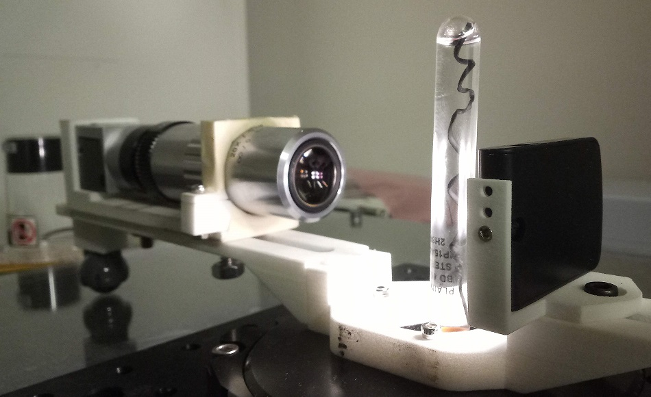

Project 1
Designing, Prototyping & Validating a Digital Motor Controlled 3D Scanner for Macroscopic Medical Application
To circumvent the difficulties encountered during the methods of eye estimation, tape and caliper, there is a need to develop a prototype which can be combined with latest technologies to get 3D images in a less turnaround time. There are available devices in the market which are difficult in turning camera at high speed and are slow in image processing based on the target detection. This study will deal with a design methodology which will help us to get 3D images in a very less turnaround time. The aim of this study is to generate a devices which can capture high resolution, reliable images and combine them together using the techniques called Photogrammetry. The primarily target area for this study would be for the medical applications e.g. Monoclonal cells or manufacturing industries for macroscopic product. Photogrammetry is referred to the science in which one makes measurements using photographs. This is the practice of utilizing accelerated photography along with remote sensing for creating 3D models from two-dimensional photographs. This is a unique application that’s garnered a high level of interest from several relevant industries, businesses, and private individuals. Following are a few of the benefits you can attain by applying photogrammetry for industrial use: • A fully automatic process for image acquisition and report generation • Automation of repetitive tasks with the use of macros • Compact volume for easy transport • Faster and more accurate decision making Photogrammetry is one of the many fields of three-dimensional measurement associated with surveying. Photogrammetry has been used for medical applications since midway through the nineteenth century and is now beginning to regain its past popularity due to recent developments in real time instrumentation. Medical photogrammetry, now part of the broader field known as biostereometrics, has had varying popularity over the past one hundred and fifty years due to the many problems encountered during practical applications.